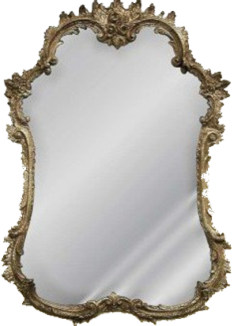
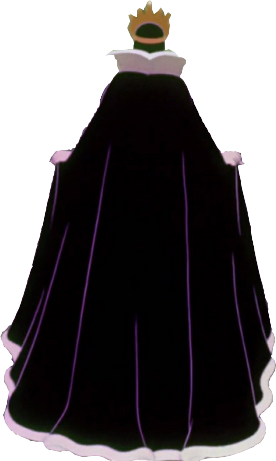
옛날, 옛날에 피부가 유난히도 하얀 백설공주가 살고 있었어요. 어렸을 적부터 빨갛게 잘 익은 사과를 무척이나 좋아했던 백설공주는나이를 먹고도 시집은커녕 독립을 할 생각조차 하지 않았어요. 온종일 사과만 먹으며 빈둥대는 백설공주가 보기 싫었던 새 왕비는결국 백설공주를 사과가 나지 않는 숲속으로 쫓아내 버렸어요.
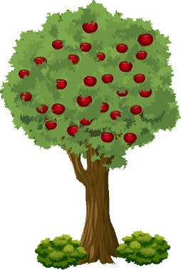
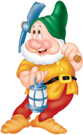
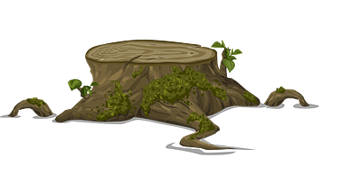
자신이 며칠 새 폭삭 늙은 것이 모두 백설공주가속을 썩인 탓이라고 생각한 왕비는 백설공주에게 작은 복수를 하기로 결심했어요. 백설공주의 젊고 아름다운 미모의 비결이잘 익은 사과에 있다는 것을 알고 있던 왕비는 노파로 변장해백설공주가 살고 있는 난쟁이의 집을 찾아갔어요.
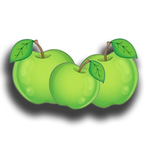
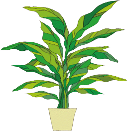
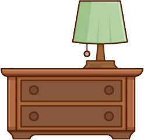
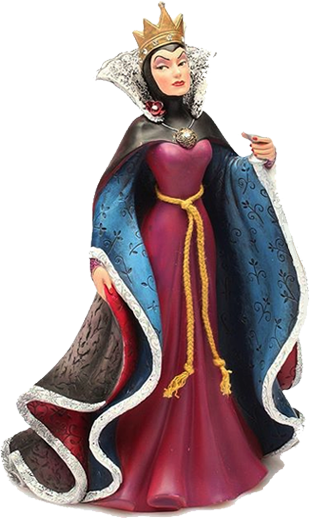
 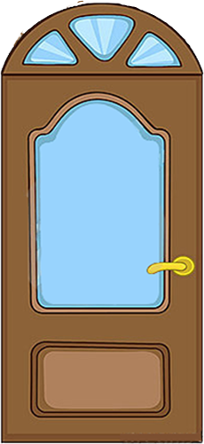
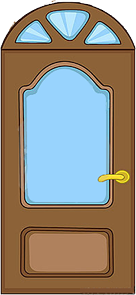
그리고는 덜 익은 청사과를 바구니에 가득 담아 백설공주에게 건네주었어요. 그동안 사과를 먹지 못했던 백설공주는덜익은 청사과도 감사히 생각하고 맛있게 먹었어요. 그렇게 새 왕비는 매일매일 백설공주에게는 덜 익은 청사과를 보내고,자신은 맛있게 잘 익은 사과를 먹었어요.
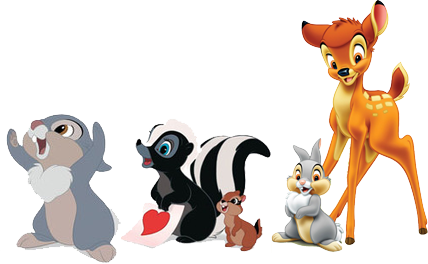
그렇게 몇 달이 지난 후 우연히 백설공주의 결혼소식을 들은왕비는 몰래 공주의 결혼식을 보러갔어요. 결혼식에서 몇 달 만에 백설공주를 본 왕비는 그만 화들짝 놀라고 말았어요.공주가 전보다 더 젊고 아름다워졌기 때문이었죠. 영문을 모르는 왕비는 화가나 날뛰었고백설공주는 띠 동갑의 젊은 왕자와 결혼해 오래오래 아름답고 행복하게 살았답니다.
백설공주